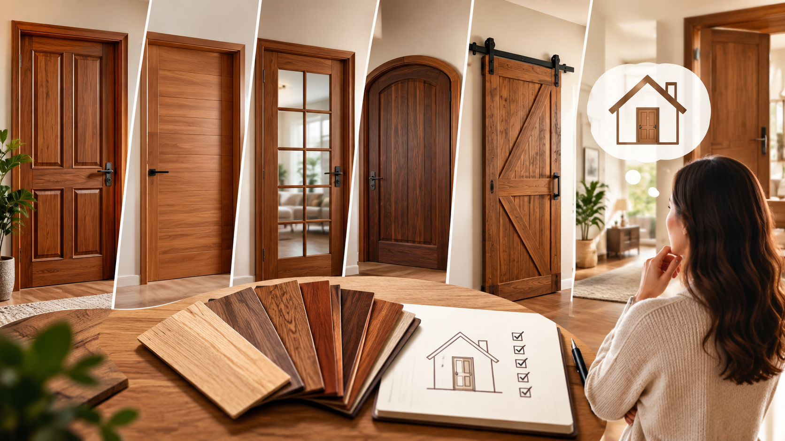

أضف صورة المقال هنا
هل تحتاج مساعدة في اختيار الأنسب لمنزلك؟
تواصل معنا الآن للحصول على استشارة مجانية وعرض سعر تفصيلي من فريق أبو حور المتخصص

تواصل معنا الآن للحصول على استشارة مجانية وعرض سعر تفصيلي من فريق أبو حور المتخصص